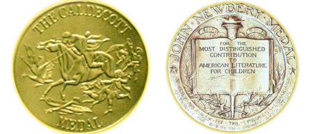

Biography
As a child, my parents read me stories before bedtime. Sometimes, on special occasions, my papa even told me “Little Boy Herbie” stories about his childhood. I listened to these stories as if they were food and I were a bottomless pit. I loved how words could come alive with a little help from my imagination, and this love turned me into a wordsmith, a crafter of stories.
I told stories about adventurous cats traveling the seas, stories about princesses trapped in tall towers, stories about my family, stories about anything and everything. As I grew older, however, this passion, while not gone, took a back seat to other pursuits: sports, friends, school, romantic interests. It wasn't until much later, after I tried several different careers, that I came back to storytelling.
I told stories about adventurous cats traveling the seas, stories about princesses trapped in tall towers, stories about my family, stories about anything and everything. As I grew older, however, this passion, while not gone, took a back seat to other pursuits: sports, friends, school, romantic interests. It wasn't until much later, after I tried several different careers, that I came back to storytelling.
Awards
My Crazy Cats won a Newberry Award in 2016
Unicorn's Party won a Caldecott Award in 2012
Unicorn's Party won a Caldecott Award in 2012